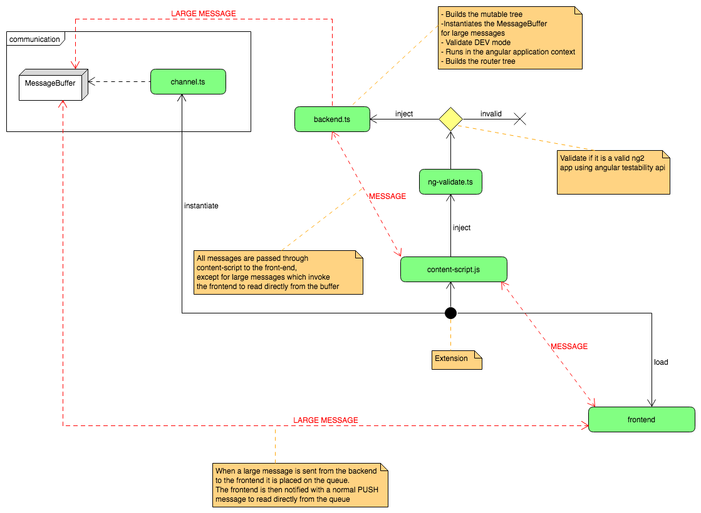

Basic Augury Architecture
Table of content
- Outline
- Backend
- Frontend
- Serialization
- Data structures
- Frontend architecture
- References
- Updated Architecture diagram
Outline
Augury is a Chrome DevTools extension that is primarily separated into two separate concerns: backend and frontend.
The backend is responsible for parsing data from Angular 2 and updating component state when the User does so from the Augury UI. Augury allows event generation from an EventEmitter or RxJS Subject. Generally speaking, the backend deals in data.
The frontend is the UI of Augury itself, it is a tab that is displayed in the DevTools.
Execution contexts
Augury is divided into several execution contexts. It is important to note that these contexts do not have direct access to each other and therefore cannot read or write each others in-memory state. Communication between contexts must happen using Chrome's extension message-passing system.
This communication can take several forms which are covered in more detail in Communication.
Conceptually the following contexts belong to the Chrome extension framework and are not unique to Augury.
Backend
The background script is the first thing to start.
Background script
A background script (channel.ts) is always running in the background in its own context. Augury uses a background script (channel.ts) to transmit small messages between the backend and frontend execution contexts.
It is likely that it would be possible to transmit messages directly between these two contexts, but it is helpful to have a channel that is (almost) guaranteed to always exist so that we can reduce the complexity of the code that establishes communication connections (in both the frontend and backend).
The messages sent using the background script channel are serialized, they are small and contain no actual application data. As a result they have little impact on the performance of Augury.
Note: Messages are stored in memory in the background execution context until they can be delivered to their target.
Content script (content-script.ts)
The content script is loaded in conjunction with each open tab in the browser. When you navigate to a new page or reload an existing page, the content script will be loaded as part of this process.
The content script is associated with a particular tab, but it does not have direct access to JavaScript application data inside that tab. It runs in its own execution context.
If you put a breakpoint in content-script.ts and reload your page, and try to inspect the window variable, you will notice that it is a different instance of window than scripts executing inside your actual page or application get. This is because the content script runs inside an isolated environment.
However, Augury needs direct access to JavaScript state inside the running application, so it uses a trick to inject code into that execution context so that we can do things like query Angular for application state (using ng.probe()).
Code injection
This code below injects a script into the application execution context. The injected code executes in the same context as the application being debugged (the inspected application). This is what allows us to query Angular for its internal state, which is the foundation of Augury.
If you open content-script.ts, you will see this piece of code (clipped for clarity):
const inject = (fn: (element: HTMLScriptElement) => void) => {
const script = document.createElement('script');
fn(script);
document.documentElement.appendChild(script);
script.parentNode.removeChild(script);
};
const injectScript = (path: string) => {
inject(script => {
script.src = chrome.extension.getURL(path);
});
};
Initialization
Further down in content-script.ts, you will see a send call, it fires a initialization message to the background script to start the bootstrapping process.
send(MessageFactory.initialize()).then(() => injectScript('build/ng-validate.js'));
Angular Validation
The code in ng-validate.ts essentially verifies that Angular 2 is running. There can be multiple Angular 2 applications on the same page, but there must be at least one in-order to use Augury.
If the validator detects that Angular 2 is running, it will post a
MessageType.FrameworkLoaded message to the browser event queue. If you go
back to content-script.ts, you will see this piece of code:
browserSubscribeOnce(MessageType.FrameworkLoaded,
() => {
loadOptions().then(options => {
// We want to load the tree rendering options that the UI has saved
// because that allows us to send the correct tree immediately upon
// startup and send it to the message queue, allowing Augury to render
// instantly as soon as the application is loaded. Without this bit
// of code we would have to wait for the frontend to start and load its
// options and then request the tree, which would add a lot of latency
// to startup.
injectSettings(options);
injectScript('build/backend.js');
});
return true;
});
The final step of the bootstrapping process, loads any preferences saved from the extension local storage. The settings get injected into the application execution context, followed by the backend.ts script getting injected into the application execution context.
This brings us to the most critical element of the Augury architecture, the backend.
Backend
The backend (backend.ts) of Augury actually integrates with the target Angular 2 application that is being inspected. This is the
piece of Augury that:
- Queries Angular for the complete component tree (the tree that is rendered in Augury's Component Tree tab).
- Reads component instance state for individual components when they get selected.
- Loads the router tree structure from Angular.
- Highlights elements on mouse over of components in the Component Tree view.
The backend code of Augury should be studied closely if you wish to understand how Augury works.
The most critical function in backend.ts is a function called updateTree (clipped for brevity):
const updateTree = (roots: Array<DebugElement>) => {
const {tree} = createTreeFromElements(roots, treeRenderOptions);
if (previousTree == null) {
messageBuffer.enqueue(MessageFactory.completeTree(tree));
}
else {
const changes = previousTree.diff(tree);
if (changes.length > 0) {
messageBuffer.enqueue(MessageFactory.treeDiff(previousTree.diff(tree)));
}
else {
return; // no changes
}
}
/// Send a message through the normal channels to indicate to the frontend
/// that messages are waiting for it in {@link messageBuffer}
send<void, void>(MessageFactory.push());
previousTree = tree;
};
The essential purpose of function updateTree is to create our own representation of the component tree (a MutableTree instance, see: mutable-tree.ts) for all running applications. These trees should be considered immutable (although they are MutableTree type) on the backend and mutable on the frontend. Plus they must be as small and performant as possible.
On the backend, we need to create a complete new tree when the application updates itself. We do this to compare it to the last tree we generated and produce a delta (the changes between those two trees). On the frontend, we maintain a single MutableTree instance that we patch when a new delta comes across the wire. This approach is optimized for the way that Angular 2 does change detection and renders components.
The mutable tree on the frontend allows us to only re-render pieces of the tree that have actually been updated since the last time we rendered. Therefore even if there is a massive component tree, as long as the entire thing is not changing very often, Augury will perform very well.
Note: For performance reasons, we do not include any actual application state in the MutableTree structure-only component metadata.
The following code detects when the application has completed updating.
const bind = (root: DebugElement) => {
const ngZone = root.injector.get(ng.coreTokens.NgZone);
if (ngZone) {
ngZone.onStable.subscribe(() => subject.next(void 0));
}
subject.debounceTime(0).subscribe(() => update());
subject.next(void 0); // initial load
};
This is the same mechanism used by tools like Protractor to determine when the application has finished updating itself.
After the update, we create a new immutable tree representation of the application component tree:
const {tree} = createTreeFromElements(roots, treeRenderOptions);
This is a rough Augury equivalent of what you would get if you executed this piece of code inside your debugger Console tab:
getAllAngularRootElements().map(root => ng.probe(root))
The crucial difference is that our tree is a read-only representation of the tree at a particular moment in time, whereas the tree produced by ng.probe() is a living tree that changes over time (as the application itself changes).
Having a representation of the component tree at a particular moment in time allows us to perform difference comparisons of two trees from two different moments. This allows us to send a far smaller data set than if we had to send the entire tree each time the application updates (how Augury used to work).
Frontend
The frontend is essentially the Augury UI that is visible to you in the Chrome Developer Tools window. This includes the Component Tree, the Router Tree, the component info panel, and some other elements.
The frontend is not actually bootstrapped until the user opens Developer Tools and navigates to the Augury tab. At that point you will see a loading indicator and Augury will load the current component tree in short order.
Angular 2 component tree
Chrome extensions are not built to send large amounts of data between two different execution contexts. Therefore we try to minimize the amount of data we send from the backend to the frontend as the application is running and being debugged. This is the primary reason for the tree delta mechanism described in the prior section. If we have a component tree with 8,000 elements (and there are applications out there with many more than that), we must ensure that we are not sending data for each of the 8,000 elements each time the page changes. We only send data for elements that have changed.
Even then, we are sending a very small amount of metadata. By this we mean things like providers, dependencies, properties, change detection, and many of the bits of information displayed in the component tree or in the Component Info panel on the right-hand side of Augury.
However, there is more information than that displayed in Augury. Crucially, we display the actual application state associated with each element on the page (in the State accordion panel). But this state information is not transmitted as part of the element tree or tree delta.
Having to serialize and transmit all that state for every single element on the page, each time the application changes, produces massive amounts of latency in Augury. (Augury used to work this way before a recent refactoring.) Therefore we only transmit that data when an element is actually selected in the frontend UI. (This is the only time that data is displayed anyway.) This significantly reduces the amount of data that has to be serialized and transmitted while the target application is running.
Performance considerations
There are a number of performance considerations to keep in mind when working on Augury. As mentioned previously, the Chrome extension framework is not designed to transmit large amounts of data from one execution context to another. The typical way that an extension transmits data from an inspected application to the extension UI itself is through this pipeline:
Backend -> Content script -> Background channel -> Frontend
It therefore takes three hops just to send a small amount of data from the inspected application to the Augury UI. Keep in mind that at each step in the pipeline, Chrome will internally serialize and deserialize the message being sent using a native implementation of JSON.stringify and JSON.parse.
If we are sending a very large message containing an element tree composed of tens of thousands of elements, there is going to be a lag of 5 or 6 seconds before that data arrives at the frontend. This constitutes an unacceptable performance penalty. To get around this, we employ a clever trick when we are sending large amounts of data from the backend to the frontend.
If you navigate back to backend.ts, you will notice this piece of code toward the top of the file, along with a large block comment:
/// For large messages, we do not send them through the normal pipe (which
/// is backend > content script > background channel > frontend), we add them
/// to this buffer and then send a {@link MessageType.Push} message that
/// tells the frontend to read messages directly from this queue itself.
/// This allows us to prevent very large messages containing tree data from
/// being serialized and deserialized four times. Using this mechanism, they
/// are serialized and deserialized a total of one times.
const messageBuffer = new MessageQueue<Message<any>>();
As described in the comment, we use this buffer for transmitting large data buffers. We do not use the normal message pipeline when sending very large amounts of data, because repeated serialization will kill performance. Instead we push a new message into messageBuffer and then we send a very small message to the frontend (a MessageType.Push message) indicating that new messages are waiting for it inside messageBuffer.
Now, open the file frontend/channel/direct-connection.ts. This contains a class named DirectConnection which is the mechanism we use to avoid repeated message JSON serialization. First, keep in mind that large amounts of data flow in only one direction in Augury: from the backend to the frontend.
Under no circumstance will we be sending a large message from the frontend to the backend. This is because the backend is where the application itself is running and therefore it contains all the data of interest. The frontend is simply a way to present that UI to the developer.
So, with that in mind, take a look at the code in DirectConnection:
readQueue(processor: (message: Message<any>, respond: (response: MessageResponse<any>) => void) => void) {
return this.remoteExecute('inspectedApplication.readMessageQueue()')
.then(result => {
const encode = value => JSON.stringify(value);
for (const message of result) {
const respond = (response: MessageResponse<any>) => {
this.remoteExecute(`inspectedApplication.response(${encode(response)})`);
};
processor(message, respond);
}
})
.catch(error => {
throw new Error(`Failed to read message queue: ${error.stack || error.message}`);
});
}
And then a little further down in the same file:
private remoteExecute(code: string): Promise<any> {
return new Promise((resolve, reject) => {
type ExceptionInfo = chrome.devtools.inspectedWindow.EvaluationExceptionInfo;
const handler = (result, exceptionInfo: ExceptionInfo) => {
if (exceptionInfo &&
(exceptionInfo.isError ||
exceptionInfo.isException)) {
reject(new Error('Code evaluation failed'));
}
else {
resolve(result);
}
};
chrome.devtools.inspectedWindow.eval(code, handler);
});
}
When the frontend receives a MessageType.Push message, it calls this readQueue function. That function in turn calls remoteExecute and invokes WindowOperations::readMessageQueue in the backend execution context, using the convenient chrome.devtools.inspectedWindow.eval function. This function allows us to reach directly into the backend context and read any data we want. It is then serialized once on its way back to the frontend execution context. This allows us to omit three repeated serialize/deserialize operations in the transmission of this data. This significantly reduces the latency introduced in the data transmission process.
So while the mechanism is slightly more complicated than just firing a message through the normal communication pipeline, it performs significantly better and produces a better user experience and less latency inside Augury itself.
Serialization
A complicating factor when transmitting data from the backend to the frontend is that very often, that data contains circular references to itself. Recall that it is impossible to serialize such data using the standard JSON.stringify method.
Therefore we have a custom serializer (in serialize.ts) which is capable of serializing data that contains circular references, in a way that consumes very little memory. In essence, the serializer takes a very complex object and produces a set of JavaScript instructions that are capable of reconstructing that object inside of another execution context. It produces a string that is a JavaScript function. The string is what is transmitted across context boundaries.
When the function string reaches the other side, we reconstruct the object using this construct:
export const deserialize = value => (new Function(value))();
(Security note: this is safer than eval() because it does not provide access to the global context or any closure variables. It executes completely independently of the context in which it was run. It is faster than eval(), too.)
This allows us to serialize and deserialize any object that we may come across in the wild without fear. (Note: The serializer is capable of serializing ES6 data structures like Set<T> and Map<K, V>, but it cannot deserialize them back to their original type on the other side. So the reconstructed object will contain all of the values and properties that the original had, but it will not have the same prototype chain.
In fact it will have no prototype chain at all. The only exception to this rule is the standard Array<T> type, which is reconstructed properly back into an array type.)
Data structures
The primary data structures that Augury works with are the types MutableTree and Node. (MutableTree contains Nodes.) This is our own internal representation of component metadata, and it is what powers the Component Tree view in the Augury UI.
Each node has an ID property (id) that looks like this:
0 0 1 2 0 1 4 2 0
This ID doubles as a path to that node inside of the MutableTree. First, recall that a MutableTree can contain multiple application component trees. So the first number in the path is the index of the application that the node belongs to. Each subsequent number is an index into the children array inside of the parent node.
Therefore, if you have an ID, you now how to traverse the path and find that node inside of the MutableTree structure. This is a critical performance optimization and allows us to avoid doing any searches when looking for nodes. We simply deserialize the ID and traverse the path, and voila, we have reached the node.
These IDs are also used in any place where we wish to store data about particular tree nodes in the Augury UI. For example, we wish to save which nodes have been expanded or collapsed inside of the Component Tree view. For this purpose we have a Map<string, Node> structure (in component-view-state.ts). Therefore even after the tree mutates and re-renders, we still maintain the correct expand/collapse state.
We do something similar in the Component Info panel on the right-hand side of the UI. Except in that case, we wish to maintain expand/collapse state for properties inside of the component instance state. For this purpose, we concatenate the node ID together with the path to the property in question. Therefore the path to a property may look like this:
0 0 1 2 0 myProperty subKey foobar
So when searching for that property (for example, when the user updates a piece of state from inside the Augury UI), we simply cleave that ID in two pieces: the node path and the property path. In the example above, the result would be:
const nodePath = [0, 0, 1, 2, 0];
const propertyPath = ['myProperty', 'subKey', 'foobar'];
So we search for the node first, then once found, we search inside of its componentInstance value and find the foobar property. (To see this in action, check out NodeItem and ComponentPropertyState.)
Frontend Architecture
The frontend is much simpler than the backend. In essence, it is not dissimilar from any other Angular 2 application that you may come across. It contains plenty of @Component() classes and composes those together into a UI that the developer interacts with when debugging Angular 2 applications.
If you have worked with Angular 2 applications, you should have no trouble understanding the Augury UI code in the frontend directory.
References
Updated Architecture diagram
